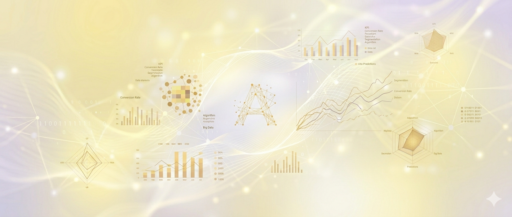
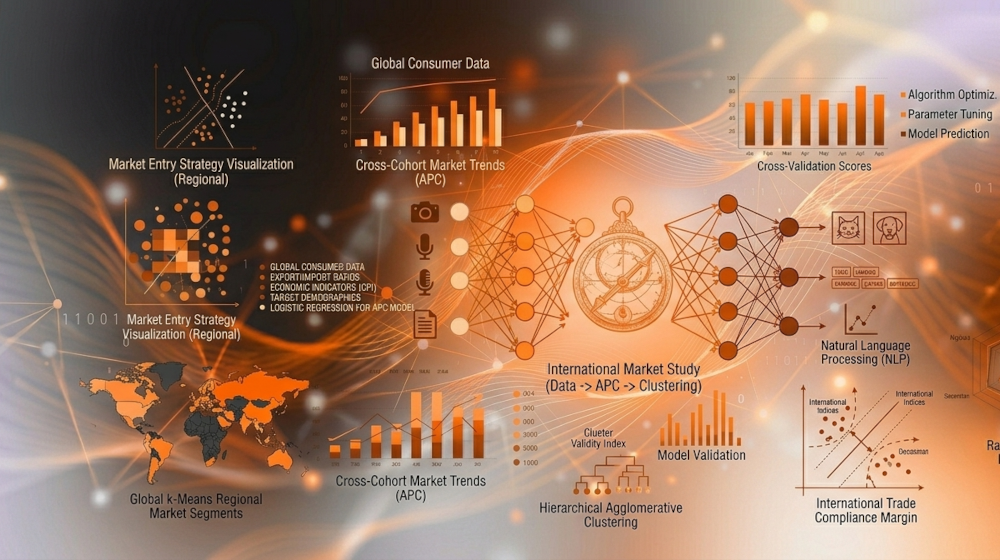
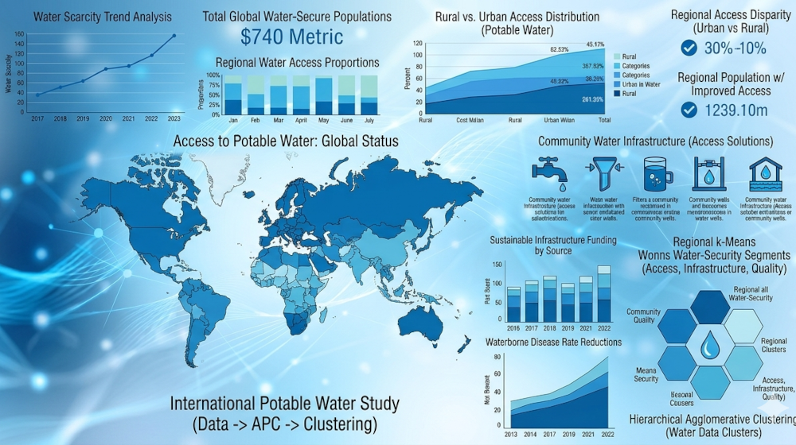
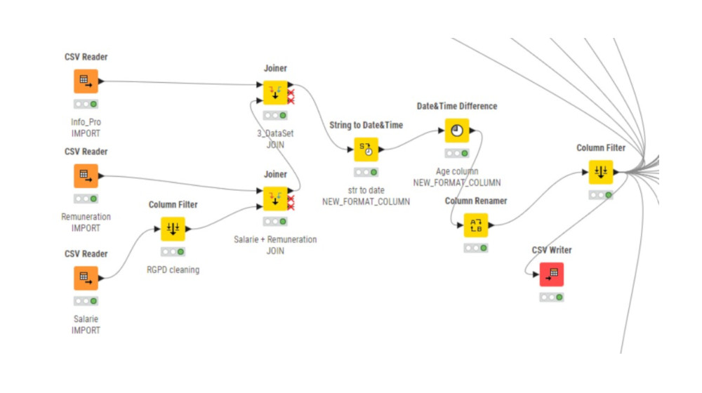
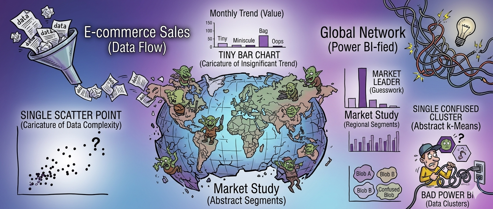
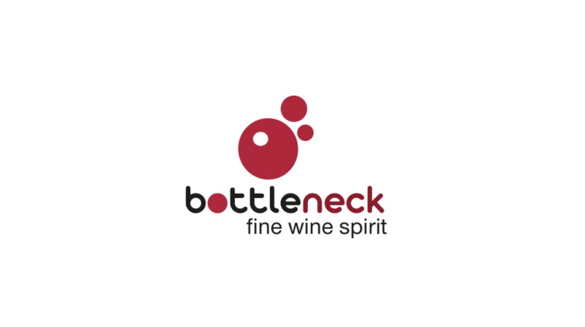
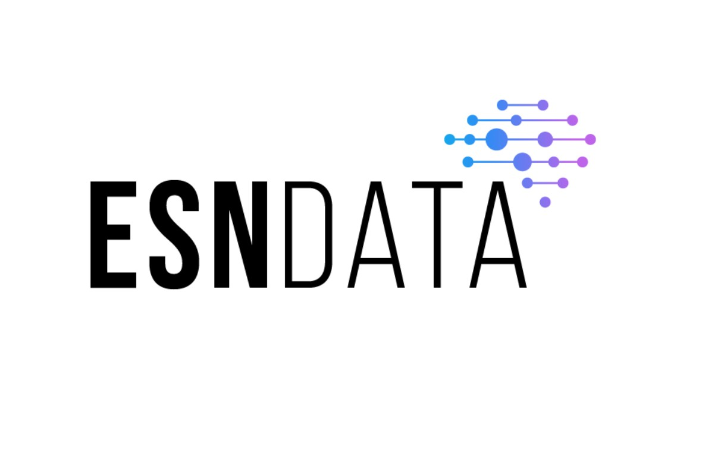
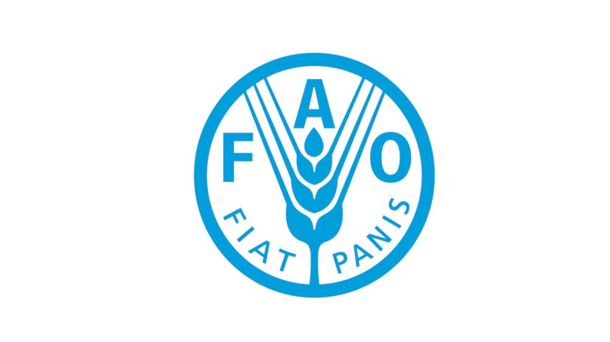
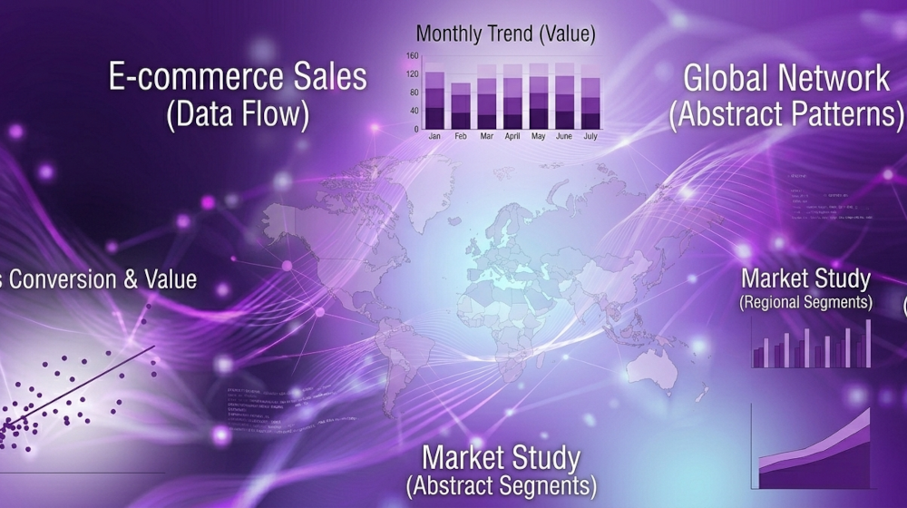

Gestion de projet
Les livrables pour Aéroworld
Concevoir un portfolio en ligne valorisant mes compétences et projets data.
7 livrables Voir sur GitHubData Analyst en formation (Titre RNCP 37837, OpenClassrooms). Je conçois des analyses, des tableaux de bord et des visualisations qui rendent l'information lisible et actionnable. Mon parcours allie rigueur analytique, sens de la communication et curiosité continue.
Trois familles de compétences au service de l'analyse de données : le savoir-faire technique, les qualités humaines et la maîtrise des outils.
Chaque carte correspond à un projet de ma formation..

Concevoir un portfolio en ligne valorisant mes compétences et projets data.
7 livrables Voir sur GitHubUtiliser des données pour identifier et classifier des faux billets via Python.
Modèle ML Voir sur GitHub
Analyser le marché global pour aider à positionner un produit.
Rapport analytique Voir sur GitHub
Étudier la qualité et l’accès à l’eau potable à partir de données environnementales.
Dashboard Tableau Voir sur GitHubÉtudier les données de vente pour orienter les choix stratégiques de la librairie.
Rapport analytique Voir sur GitHub
Étudier les indicateurs d’égalité femmes/hommes en garantissant la conformité RGPD des données.
Pipeline ETL Voir sur GitHub
Construire un tableau de bord interactif dans Power BI pour suivre l’avancement des projets.
Dashboard interactif Power BI Voir sur GitHub
Automatiser et améliorer la gestion des données d’une boutique via des scripts Python.
Rapport de gestion Voir sur GitHub
Concevoir et gérer une base de données pour structurer les informations immobilières.
Scripts SQL Voir sur GitHub
Analyse des données de santé pour comprendre des tendances et proposer des mesures adaptées.
Rapport analytique Voir sur GitHubInterroger une base de données avec SQL pour extraire et analyser des informations pertinentes.
Scripts SQL Voir sur GitHub
Analyse des données de vente avec Excel pour optimiser la stratégie commerciale et augmenter les revenus.
Rapport analytique Voir sur GitHubConstruire des outils visuels pour suivre et communiquer l’avancement des projets internes.
Dashboard interactif Tableau Voir sur GitHubUne question, une opportunité, un échange autour de la donnée ? N'hésitez pas à me contacter.